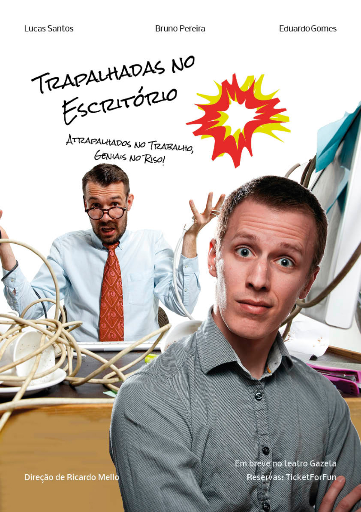

Cartaz - Trapalhadas no Escritório

O Projeto
O cartaz foi desenvolvido no formato A3, 42x30cm, com a temática da divulgação de uma peça de teatro fictícia, que ainda não tem data de estreia.
A Imagem de fundo, foi desenvolvida a partir de duas imagens, que foram alteradas via Photoshop.
 Fonte: Freepik
Fonte: FreepikFoi retirado o fundo de ambas imagens e colocadas sobrepostas.
No programa Adobe Indesign foi criado um Cartaz, com as imagens sobrepostas, o título ao centro, virado na transversal, com uma ilustração ao lado e demais informações nas bordas do cartaz.
A tipografia escolhida para o título foi a Rock Salt, com a cor preto #000000. A razão dessa escolha foi o fato do título estar localizado um pouco acima do centro do cartaz, que possui um fundo branco, logo, consegue manter um bom contraste. Já a razão da escolha da letra, foi a sensação de ser escrita a mão, dando uma sensação de pouca seriedade e trapalhadas, até pelo fato do título estar virado na transversal.
Para letras que estão nas bordas do cartaz, a letra Nobile, foi escolhida, pois promove boa leitura e sua cor, na parte superior, foi escolhido o preto #000000, para ter um bom contraste com o fundo branco. Na parte inferior foi usada uma tipografia branca de mesmo tamanho mas com a cor branca, para ter bom contraste com o fundo das fotos, que tem as cores azul e bege.
Resumo das Características do Cartaz
Tamanho de folha: Cartaz A3: 42x30cm
Tipografia
Título
Cor: #000000

Tipografia: Rock Salt
Tamanho: 40
Subtítulo (slogan):
Cor: #000000
Tipografia: Rock Salt
Tamanho: 18
Nomes dos atores (superior do cartaz):
Cor: #ffffff
Tipografia: Nobile
Tamanho: 18
Aviso (Inferior do cartaz):
Cor: #ffffff
Tipografia: Nobile
Tamanho: 18
Cores predominantes na Imagem:
Inspirações
Para o desenvolvimento do cartaz foram utilizadas referências de cartazes de alguns filmes, citados abaixo:
A inspiração de “O Porteiro” veio da disposição dos personagens no poster. Da peça “O Caso”, foi usado o fundo, que destaca muito os personagens. Já de “um Casamento Feliz”, foi usado o fato de utilizar ilustrações junto a tipografia.
Resultado Final
Conclusão
A pesquisa de boas referências é extremamente importante na hora de criar um cartaz, além de entender seu contexto, pois com essa divulgação que você atrairá o público para ver sua peça, sendo extremamente necessário que o cartaz consiga transmitir alguns dos sentimentos da peça, seja drama, comédia, etc. No caso apresentado, foram utilizados artifícios como uma tipografia mal centralizada, para dialogar com a palavra “atrapalhados”, uma ilustração de explosão, que dá a impressão de bagunça e a fotografia de uma mesa muito bagunçada, com um chefe muito irritado e um funcionário sem entender, que passa a mensagem de que o que será visto, é uma comédia.